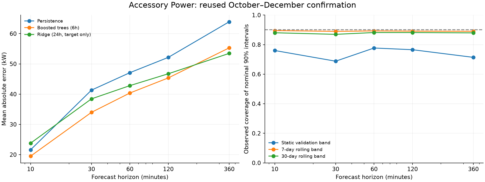
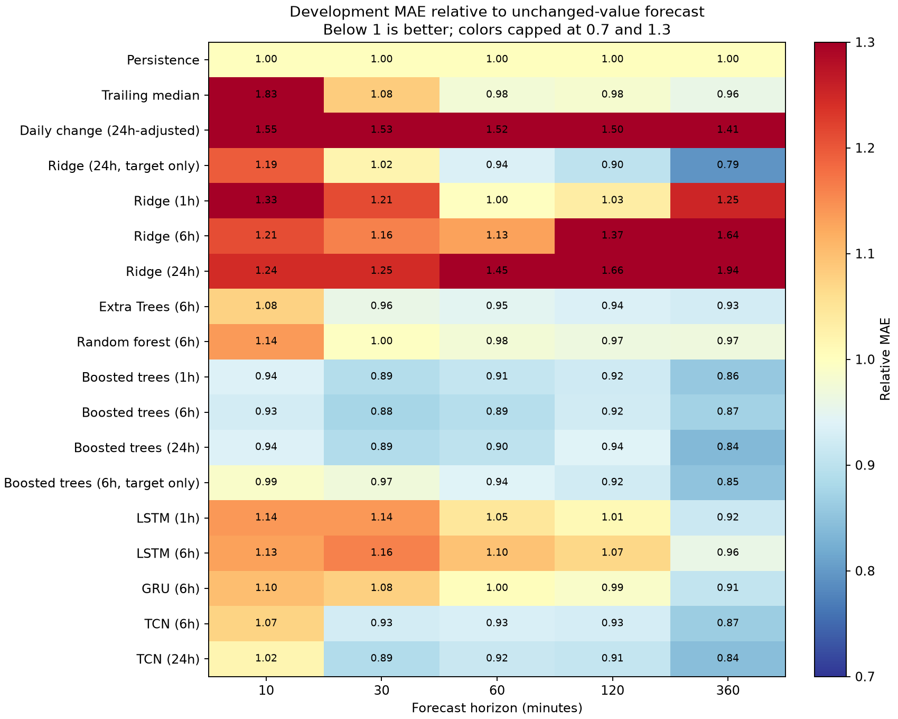

15 model configurations, three baselines, five horizons and three chronological development backtests, followed by reused October–December confirmation. Candidates were selected separately per horizon using mean relative MAE over development periods.
October–December was already examined in previous experiments. It is not a new independent lockbox. This run locks choices using development results before scoring confirmation. This is a broad bounded benchmark, not an exhaustive search over every algorithm or hyperparameter.
| Horizon (min) | Selected model | MAE (kW) | Gain vs persistence (%) | RMSE (kW) | 90% coverage (%) | 90% width (kW) |
|---|---|---|---|---|---|---|
| 10 | Boosted trees (6h) | 19.493 | 9.696 | 39.950 | 76.014 | 44.780 |
| 30 | Boosted trees (6h) | 33.974 | 17.782 | 55.641 | 68.794 | 69.852 |
| 60 | Boosted trees (6h) | 40.368 | 14.277 | 63.778 | 77.710 | 108.783 |
| 120 | Ridge (24h, target only) | 46.733 | 10.388 | 66.579 | 76.559 | 125.428 |
| 360 | Ridge (24h, target only) | 53.471 | 16.347 | 72.336 | 71.382 | 131.055 |

| Horizon (min) | Selected peak MAE (kW) | Persistence peak MAE (kW) | High-demand samples |
|---|---|---|---|
| 10 | 74.247 | 78.002 | 616 |
| 30 | 152.266 | 155.690 | 616 |
| 60 | 188.770 | 164.966 | 616 |
| 120 | 178.948 | 173.675 | 616 |
| 360 | 195.163 | 178.298 | 610 |
High demand is defined by actual target values at or above the training95th percentile. Lower average error across all readings does not establish lower error during peaks. Prediction-band coverage below is measured across all readings, not guaranteed within this high-demand subset.
| horizon_minutes | selected_model | MAE_difference_vs_persistence_MW | day_bootstrap_95pct |
|---|---|---|---|
| 10 | boosted_6h | -0.002093 | [-0.0025976070412126883, -0.0016367498632944835] |
| 30 | boosted_6h | -0.007348 | [-0.009009675510081082, -0.005803132857958364] |
| 60 | boosted_6h | -0.006723 | [-0.008323364471885619, -0.005295360551500497] |
| 120 | ridge_own24h | -0.005418 | [-0.007362510189540183, -0.0034201589248257676] |
| 360 | ridge_own24h | -0.010449 | [-0.013147939879179992, -0.00772521322941701] |
Negative differences favor the selected forecast over persistence. Day-block bootstrap intervals are exploratory and do not capture uncertainty across years or sites. Symmetric prediction intervals are calibrated on validation absolute residuals; time dependence and changing operating conditions can cause coverage below 90%.
Exploratory diagnostic added after static intervals undercovered confirmation. Both 7-day and 30-day windows are reported without selecting a winner on confirmation. Only resolved forecast errors with target time <= current forecast origin are used.
The right-hand chart compares interval coverage for the selected model at each horizon. Rolling windows use an error only when that forecast’s target timestamp has passed. Point forecasts are unchanged. Larger bands can improve coverage at the cost of precision.
| fold | horizon_minutes | model | window_days | coverage | mean_width_MW | n | fallback_n |
|---|---|---|---|---|---|---|---|
| confirmation | 10 | boosted_6h | 7 | 0.8950 | 0.1091 | 13212 | 0 |
| confirmation | 10 | boosted_6h | 30 | 0.8803 | 0.0991 | 13212 | 0 |
| confirmation | 30 | boosted_6h | 7 | 0.8898 | 0.1571 | 13212 | 0 |
| confirmation | 30 | boosted_6h | 30 | 0.8696 | 0.1468 | 13212 | 0 |
| confirmation | 60 | boosted_6h | 7 | 0.8927 | 0.1834 | 13212 | 0 |
| confirmation | 60 | boosted_6h | 30 | 0.8818 | 0.1782 | 13212 | 0 |
| confirmation | 120 | ridge_own24h | 7 | 0.8913 | 0.1956 | 13212 | 0 |
| confirmation | 120 | ridge_own24h | 30 | 0.8817 | 0.1907 | 13212 | 0 |
| confirmation | 360 | ridge_own24h | 7 | 0.8902 | 0.2139 | 13212 | 0 |
| confirmation | 360 | ridge_own24h | 30 | 0.8795 | 0.2095 | 13212 | 0 |
| fold | horizon_minutes | model | window_days | coverage | mean_width_MW | n | fallback_n |
|---|---|---|---|---|---|---|---|
| June-July | 10 | boosted_6h | 7 | 0.8968 | 0.0843 | 6102 | 1 |
| June-July | 10 | boosted_6h | 30 | 0.9035 | 0.0862 | 6102 | 1 |
| June-July | 30 | boosted_6h | 7 | 0.8941 | 0.1687 | 6102 | 3 |
| June-July | 30 | boosted_6h | 30 | 0.9002 | 0.1736 | 6102 | 3 |
| June-July | 60 | boosted_6h | 7 | 0.8971 | 0.1814 | 6102 | 6 |
| June-July | 60 | boosted_6h | 30 | 0.9110 | 0.1912 | 6102 | 6 |
| June-July | 120 | ridge_own24h | 7 | 0.8966 | 0.1752 | 6102 | 12 |
| June-July | 120 | ridge_own24h | 30 | 0.9041 | 0.1808 | 6102 | 12 |
| June-July | 360 | ridge_own24h | 7 | 0.8958 | 0.1942 | 6102 | 36 |
| June-July | 360 | ridge_own24h | 30 | 0.8989 | 0.1982 | 6102 | 36 |
| August | 10 | boosted_6h | 7 | 0.9115 | 0.0639 | 3899 | 0 |
| August | 10 | boosted_6h | 30 | 0.9220 | 0.0677 | 3899 | 0 |
| August | 30 | boosted_6h | 7 | 0.9100 | 0.1222 | 3899 | 0 |
| August | 30 | boosted_6h | 30 | 0.9146 | 0.1168 | 3899 | 0 |
| August | 60 | boosted_6h | 7 | 0.9097 | 0.1590 | 3899 | 0 |
| August | 60 | boosted_6h | 30 | 0.9069 | 0.1458 | 3899 | 0 |
| August | 120 | ridge_own24h | 7 | 0.8984 | 0.1733 | 3899 | 0 |
| August | 120 | ridge_own24h | 30 | 0.9023 | 0.1584 | 3899 | 0 |
| August | 360 | ridge_own24h | 7 | 0.8974 | 0.2067 | 3899 | 0 |
| August | 360 | ridge_own24h | 30 | 0.9097 | 0.1745 | 3899 | 0 |
| September | 10 | boosted_6h | 7 | 0.8911 | 0.0433 | 4039 | 0 |
| September | 10 | boosted_6h | 30 | 0.9069 | 0.0462 | 4039 | 0 |
| September | 30 | boosted_6h | 7 | 0.8903 | 0.0725 | 4039 | 0 |
| September | 30 | boosted_6h | 30 | 0.9042 | 0.0794 | 4039 | 0 |
| September | 60 | boosted_6h | 7 | 0.8876 | 0.1063 | 4039 | 0 |
| September | 60 | boosted_6h | 30 | 0.9037 | 0.1154 | 4039 | 0 |
| September | 120 | ridge_own24h | 7 | 0.8916 | 0.1218 | 4039 | 0 |
| September | 120 | ridge_own24h | 30 | 0.9193 | 0.1401 | 4039 | 0 |
| September | 360 | ridge_own24h | 7 | 0.8898 | 0.1306 | 4039 | 0 |
| September | 360 | ridge_own24h | 30 | 0.9178 | 0.1429 | 4039 | 0 |
| confirmation | 10 | boosted_6h | 7 | 0.8950 | 0.1091 | 13212 | 0 |
| confirmation | 10 | boosted_6h | 30 | 0.8803 | 0.0991 | 13212 | 0 |
| confirmation | 30 | boosted_6h | 7 | 0.8898 | 0.1571 | 13212 | 0 |
| confirmation | 30 | boosted_6h | 30 | 0.8696 | 0.1468 | 13212 | 0 |
| confirmation | 60 | boosted_6h | 7 | 0.8927 | 0.1834 | 13212 | 0 |
| confirmation | 60 | boosted_6h | 30 | 0.8818 | 0.1782 | 13212 | 0 |
| confirmation | 120 | ridge_own24h | 7 | 0.8913 | 0.1956 | 13212 | 0 |
| confirmation | 120 | ridge_own24h | 30 | 0.8817 | 0.1907 | 13212 | 0 |
| confirmation | 360 | ridge_own24h | 7 | 0.8902 | 0.2139 | 13212 | 0 |
| confirmation | 360 | ridge_own24h | 30 | 0.8795 | 0.2095 | 13212 | 0 |

| model | horizon_minutes | development_mean_relative_MAE | fold_relative_MAE |
|---|---|---|---|
| Persistence | 10 | 1.0000 | [1.0, 1.0, 1.0] |
| Persistence | 30 | 1.0000 | [1.0, 1.0, 1.0] |
| Persistence | 60 | 1.0000 | [1.0, 1.0, 1.0] |
| Persistence | 120 | 1.0000 | [1.0, 1.0, 1.0] |
| Persistence | 360 | 1.0000 | [1.0, 1.0, 1.0] |
| Trailing median | 10 | 1.8339 | [1.6879771947860718, 1.8316612243652344, 1.9819825887680054] |
| Trailing median | 30 | 1.0836 | [1.0278687477111816, 1.0817148685455322, 1.141262173652649] |
| Trailing median | 60 | 0.9763 | [0.9518450498580933, 0.9655327200889587, 1.011414647102356] |
| Trailing median | 120 | 0.9820 | [0.9460336565971375, 1.0117827653884888, 0.988084614276886] |
| Trailing median | 360 | 0.9595 | [0.9433292746543884, 0.9723686575889587, 0.9626847505569458] |
| Daily pattern | 10 | 1.5472 | [1.5685820579528809, 1.5202385187149048, 1.5526535511016846] |
| Daily pattern | 30 | 1.5308 | [1.5342795848846436, 1.518184781074524, 1.5399168729782104] |
| Daily pattern | 60 | 1.5174 | [1.515528678894043, 1.5080024003982544, 1.5287102460861206] |
| Daily pattern | 120 | 1.4980 | [1.4873179197311401, 1.5017085075378418, 1.5048495531082153] |
| Daily pattern | 360 | 1.4100 | [1.4257893562316895, 1.4194096326828003, 1.3847829103469849] |
| ridge_own24h | 10 | 1.1946 | [1.1161214322178163, 1.2281428183560845, 1.2394983601404685] |
| ridge_own24h | 30 | 1.0190 | [0.9348209929950646, 1.0616284392879054, 1.0606889067828214] |
| ridge_own24h | 60 | 0.9357 | [0.8639188845481421, 0.9781680436928584, 0.9650111499076175] |
| ridge_own24h | 120 | 0.9029 | [0.8426234518113035, 0.9550093560483595, 0.9109465926406515] |
| ridge_own24h | 360 | 0.7943 | [0.7862270984138072, 0.8102774248888822, 0.7864041638558787] |
| ridge_1h | 10 | 1.3265 | [1.3177647951879128, 1.447234883779131, 1.2144140316515186] |
| ridge_1h | 30 | 1.2116 | [1.5037937648131205, 1.1446336435501105, 0.9862615562511416] |
| ridge_1h | 60 | 0.9981 | [1.0796963978975953, 0.9740167048359117, 0.9404685016149867] |
| ridge_1h | 120 | 1.0349 | [1.1747163359755903, 0.9832995289195254, 0.9467041065178803] |
| ridge_1h | 360 | 1.2516 | [1.9202450908696236, 0.9304968217100944, 0.903922571525816] |
| ridge_6h | 10 | 1.2100 | [1.1191244764449888, 1.3587777721104113, 1.1522265999108021] |
| ridge_6h | 30 | 1.1603 | [1.3315330538433863, 1.166510878349706, 0.9828347703900231] |
| ridge_6h | 60 | 1.1309 | [1.3638445777905854, 1.0597347508854944, 0.9692417226497183] |
| ridge_6h | 120 | 1.3745 | [2.091576355491023, 1.0622910994574886, 0.9695427049647937] |
| ridge_6h | 360 | 1.6373 | [2.9450286710261424, 1.0633711447303822, 0.9036257490278387] |
| ridge_24h | 10 | 1.2440 | [1.2399680878854002, 1.3441436890691887, 1.1479387180133487] |
| ridge_24h | 30 | 1.2461 | [1.515004839882765, 1.2086200842229393, 1.014564705822797] |
| ridge_24h | 60 | 1.4474 | [2.1787818664018257, 1.1350698318008614, 1.028467042269087] |
| ridge_24h | 120 | 1.6628 | [2.8005562281639897, 1.145920054974396, 1.0418518997034665] |
| ridge_24h | 360 | 1.9397 | [3.658102171381158, 1.1497923840544937, 1.0110784778630155] |
| extra_trees_6h | 10 | 1.0760 | [1.040766192405114, 1.1735476645709235, 1.0135508969359852] |
| extra_trees_6h | 30 | 0.9598 | [0.9608409059032218, 1.008292626783551, 0.9101446375437147] |
| extra_trees_6h | 60 | 0.9484 | [0.9068432179608108, 0.9821357534010847, 0.9561502226604214] |
| extra_trees_6h | 120 | 0.9362 | [0.9096536021389527, 0.9473340068833719, 0.9516289183407992] |
| extra_trees_6h | 360 | 0.9268 | [1.0252715972184563, 0.8408256687407055, 0.9141565118289623] |
| random_forest_6h | 10 | 1.1376 | [1.1296527623297217, 1.2688661337725513, 1.0141911289797836] |
| random_forest_6h | 30 | 0.9973 | [1.0005341729483173, 1.0917883745642107, 0.8994350209749988] |
| random_forest_6h | 60 | 0.9752 | [0.9353642110485015, 1.033715619817367, 0.9564770196628877] |
| random_forest_6h | 120 | 0.9664 | [0.9692361108182301, 0.9738985034701436, 0.9559565938692279] |
| random_forest_6h | 360 | 0.9678 | [1.1811883554477702, 0.8291856095463378, 0.8930945588143466] |
| boosted_1h | 10 | 0.9378 | [0.9347097620856603, 0.9976222979923047, 0.8810724372969168] |
| boosted_1h | 30 | 0.8900 | [0.997520278479551, 0.9228641698301339, 0.7494970726701289] |
| boosted_1h | 60 | 0.9101 | [0.9021051073494305, 0.9595941168314334, 0.8686669426286726] |
| boosted_1h | 120 | 0.9212 | [0.876168677946889, 0.9648828082105148, 0.9226303198445011] |
| boosted_1h | 360 | 0.8590 | [0.7972367670007565, 0.8484209104610981, 0.9313775189184949] |
| boosted_6h | 10 | 0.9267 | [0.9318587426012965, 0.9699417773027967, 0.8784070103805365] |
| boosted_6h | 30 | 0.8763 | [0.9588785310562505, 0.926520164600102, 0.7433856866617617] |
| boosted_6h | 60 | 0.8936 | [0.87777659395306, 0.9563476129081553, 0.8466848220749923] |
| boosted_6h | 120 | 0.9249 | [0.8979278119816368, 0.9615554538814761, 0.9152850919033809] |
| boosted_6h | 360 | 0.8723 | [0.8278120358134393, 0.8264136088716977, 0.9626135347324839] |
| boosted_24h | 10 | 0.9368 | [0.9510963502017028, 0.9773303531802667, 0.8819170922189544] |
| boosted_24h | 30 | 0.8884 | [0.9780064766573316, 0.9397978410769061, 0.7474117036838744] |
| boosted_24h | 60 | 0.9018 | [0.8766384371047282, 0.9534842673692173, 0.8752007542513275] |
| boosted_24h | 120 | 0.9394 | [0.9341655924511505, 0.9655694266406246, 0.9185355763908639] |
| boosted_24h | 360 | 0.8374 | [0.8545058599572636, 0.8014771437781931, 0.8562807275360924] |
| boosted_own6h | 10 | 0.9894 | [0.9826109408004411, 1.0032681935616283, 0.9824479420228308] |
| boosted_own6h | 30 | 0.9708 | [0.9301283197890688, 1.0271457426011013, 0.9552041563092487] |
| boosted_own6h | 60 | 0.9395 | [0.9008198029137588, 1.0087473055436906, 0.9089381926393089] |
| boosted_own6h | 120 | 0.9241 | [0.8963046616386348, 0.9853208640365021, 0.8907348518547729] |
| boosted_own6h | 360 | 0.8512 | [0.8945144837949058, 0.8362490711605599, 0.8227959835852493] |
| lstm_1h | 10 | 1.1388 | [1.1315292119979858, 1.1952669620513916, 1.0894962549209595] |
| lstm_1h | 30 | 1.1391 | [1.427233338356018, 1.1124018430709839, 0.8776829838752747] |
| lstm_1h | 60 | 1.0464 | [1.2455410957336426, 0.9906214475631714, 0.903036892414093] |
| lstm_1h | 120 | 1.0096 | [1.1564701795578003, 0.9406924247741699, 0.9315296411514282] |
| lstm_1h | 360 | 0.9175 | [1.070442795753479, 0.8187627196311951, 0.8632107377052307] |
| lstm_6h | 10 | 1.1289 | [1.146732211112976, 1.1650218963623047, 1.0750720500946045] |
| lstm_6h | 30 | 1.1596 | [1.5039174556732178, 1.1504608392715454, 0.8244311213493347] |
| lstm_6h | 60 | 1.0958 | [1.3583064079284668, 1.0407967567443848, 0.8881588578224182] |
| lstm_6h | 120 | 1.0699 | [1.288886547088623, 0.9731059074401855, 0.9476558566093445] |
| lstm_6h | 360 | 0.9594 | [1.1362948417663574, 0.825769305229187, 0.9160478711128235] |
| gru_6h | 10 | 1.1002 | [1.104400634765625, 1.1678271293640137, 1.0284736156463623] |
| gru_6h | 30 | 1.0774 | [1.2281920909881592, 1.0782220363616943, 0.9258376359939575] |
| gru_6h | 60 | 1.0039 | [1.1075303554534912, 0.991798460483551, 0.9123121500015259] |
| gru_6h | 120 | 0.9900 | [1.0860991477966309, 0.9705619215965271, 0.913421630859375] |
| gru_6h | 360 | 0.9068 | [1.0529375076293945, 0.8296474814414978, 0.8378770351409912] |
| tcn_6h | 10 | 1.0727 | [1.0129774808883667, 1.1773568391799927, 1.0278394222259521] |
| tcn_6h | 30 | 0.9266 | [0.9834388494491577, 0.9940623044967651, 0.8023413419723511] |
| tcn_6h | 60 | 0.9340 | [0.9380536079406738, 0.9894864559173584, 0.8745238780975342] |
| tcn_6h | 120 | 0.9273 | [0.9264677166938782, 0.9660346508026123, 0.8895356059074402] |
| tcn_6h | 360 | 0.8662 | [0.9127166867256165, 0.8338651061058044, 0.8520610928535461] |
| tcn_24h | 10 | 1.0185 | [1.0356388092041016, 1.0167707204818726, 1.0029553174972534] |
| tcn_24h | 30 | 0.8886 | [0.9244862794876099, 0.9753687381744385, 0.765959620475769] |
| tcn_24h | 60 | 0.9153 | [0.9101946353912354, 0.9839572310447693, 0.8516401052474976] |
| tcn_24h | 120 | 0.9092 | [0.906531572341919, 0.9524701833724976, 0.8685595393180847] |
| tcn_24h | 360 | 0.8437 | [0.8541118502616882, 0.841359555721283, 0.8356538414955139] |
| Model | Horizon (min) | Target-only relative MAE | All-telemetry relative MAE | All-telemetry gain vs target only (%) |
|---|---|---|---|---|
| Ridge 24h | 10 | 1.195 | 1.244 | -4.138 |
| Ridge 24h | 30 | 1.019 | 1.246 | -22.277 |
| Ridge 24h | 60 | 0.936 | 1.447 | -54.691 |
| Ridge 24h | 120 | 0.903 | 1.663 | -84.168 |
| Ridge 24h | 360 | 0.794 | 1.940 | -144.196 |
| Boosted trees 6h | 10 | 0.989 | 0.927 | 6.338 |
| Boosted trees 6h | 30 | 0.971 | 0.876 | 9.741 |
| Boosted trees 6h | 60 | 0.940 | 0.894 | 4.885 |
| Boosted trees 6h | 120 | 0.924 | 0.925 | -0.087 |
| Boosted trees 6h | 360 | 0.851 | 0.872 | -2.478 |
Positive gain means the additional telemetry improves development MAE relative to a model using only past target values and calendar features. The comparison adds cooling, compute and other power measurements together, so it does not isolate a causal contribution from any one sensor.
| model | horizon_minutes | MAE_MW | RMSE_MW | bias_MW | MAE_relative_to_persistence | peak_MAE_MW | peak_n | interval90_coverage | interval90_mean_width_MW | n |
|---|---|---|---|---|---|---|---|---|---|---|
| Persistence | 10 | 0.0216 | 0.0468 | 0.0000 | 1.0000 | 0.0780 | 616 | 0.7831 | 0.0574 | 13212 |
| Persistence | 30 | 0.0413 | 0.0699 | -0.0000 | 1.0000 | 0.1557 | 616 | 0.7589 | 0.1088 | 13212 |
| Persistence | 60 | 0.0471 | 0.0776 | -0.0000 | 1.0000 | 0.1650 | 616 | 0.7872 | 0.1392 | 13212 |
| Persistence | 120 | 0.0522 | 0.0812 | -0.0000 | 1.0000 | 0.1737 | 616 | 0.7957 | 0.1594 | 13212 |
| Persistence | 360 | 0.0639 | 0.0909 | 0.0001 | 1.0000 | 0.1783 | 610 | 0.7602 | 0.1778 | 13212 |
| Trailing median | 10 | 0.0327 | 0.0578 | -0.0028 | 1.5168 | 0.1318 | 616 | 0.7959 | 0.0963 | 13212 |
| Trailing median | 30 | 0.0393 | 0.0662 | -0.0028 | 0.9507 | 0.1508 | 616 | 0.8085 | 0.1244 | 13212 |
| Trailing median | 60 | 0.0432 | 0.0701 | -0.0029 | 0.9176 | 0.1549 | 616 | 0.8151 | 0.1408 | 13212 |
| Trailing median | 120 | 0.0482 | 0.0741 | -0.0028 | 0.9241 | 0.1639 | 616 | 0.8137 | 0.1588 | 13212 |
| Trailing median | 360 | 0.0592 | 0.0838 | -0.0027 | 0.9258 | 0.1776 | 610 | 0.7589 | 0.1670 | 13212 |
| Daily pattern | 10 | 0.0342 | 0.0654 | 0.0000 | 1.5847 | 0.0893 | 616 | 0.7504 | 0.0876 | 13212 |
| Daily pattern | 30 | 0.0638 | 0.0976 | 0.0000 | 1.5451 | 0.1745 | 616 | 0.7293 | 0.1582 | 13212 |
| Daily pattern | 60 | 0.0722 | 0.1086 | 0.0000 | 1.5342 | 0.1840 | 616 | 0.7671 | 0.2032 | 13212 |
| Daily pattern | 120 | 0.0784 | 0.1148 | 0.0001 | 1.5032 | 0.1974 | 616 | 0.7595 | 0.2172 | 13212 |
| Daily pattern | 360 | 0.0917 | 0.1260 | 0.0003 | 1.4349 | 0.1942 | 610 | 0.7396 | 0.2478 | 13212 |
| ridge_own24h | 10 | 0.0238 | 0.0431 | 0.0007 | 1.1017 | 0.0915 | 616 | 0.7742 | 0.0561 | 13212 |
| ridge_own24h | 30 | 0.0384 | 0.0589 | 0.0017 | 0.9301 | 0.1533 | 616 | 0.7616 | 0.0986 | 13212 |
| ridge_own24h | 60 | 0.0428 | 0.0632 | 0.0023 | 0.9091 | 0.1694 | 616 | 0.7828 | 0.1170 | 13212 |
| ridge_own24h | 120 | 0.0467 | 0.0666 | 0.0031 | 0.8961 | 0.1789 | 616 | 0.7656 | 0.1254 | 13212 |
| ridge_own24h | 360 | 0.0535 | 0.0723 | 0.0060 | 0.8365 | 0.1952 | 610 | 0.7138 | 0.1311 | 13212 |
| ridge_1h | 10 | 0.0219 | 0.0366 | 0.0014 | 1.0153 | 0.0801 | 616 | 0.7377 | 0.0483 | 13212 |
| ridge_1h | 30 | 0.0339 | 0.0550 | -0.0029 | 0.8211 | 0.1430 | 616 | 0.7763 | 0.0901 | 13212 |
| ridge_1h | 60 | 0.0400 | 0.0619 | -0.0047 | 0.8497 | 0.1770 | 616 | 0.8017 | 0.1151 | 13212 |
| ridge_1h | 120 | 0.0453 | 0.0667 | -0.0041 | 0.8685 | 0.1928 | 616 | 0.8016 | 0.1322 | 13212 |
| ridge_1h | 360 | 0.0540 | 0.0754 | -0.0080 | 0.8441 | 0.2197 | 610 | 0.7923 | 0.1546 | 13212 |
| ridge_6h | 10 | 0.0216 | 0.0360 | 0.0009 | 1.0000 | 0.0805 | 616 | 0.7330 | 0.0475 | 13212 |
| ridge_6h | 30 | 0.0343 | 0.0541 | -0.0003 | 0.8296 | 0.1410 | 616 | 0.7578 | 0.0856 | 13212 |
| ridge_6h | 60 | 0.0414 | 0.0616 | 0.0004 | 0.8791 | 0.1710 | 616 | 0.7832 | 0.1142 | 13212 |
| ridge_6h | 120 | 0.0462 | 0.0665 | -0.0020 | 0.8856 | 0.1866 | 616 | 0.7871 | 0.1313 | 13212 |
| ridge_6h | 360 | 0.0536 | 0.0755 | -0.0105 | 0.8380 | 0.2216 | 610 | 0.7813 | 0.1529 | 13212 |
| ridge_24h | 10 | 0.0215 | 0.0360 | 0.0001 | 0.9963 | 0.0815 | 616 | 0.7317 | 0.0472 | 13212 |
| ridge_24h | 30 | 0.0345 | 0.0542 | -0.0015 | 0.8351 | 0.1434 | 616 | 0.7592 | 0.0851 | 13212 |
| ridge_24h | 60 | 0.0418 | 0.0618 | -0.0009 | 0.8875 | 0.1742 | 616 | 0.7889 | 0.1150 | 13212 |
| ridge_24h | 120 | 0.0465 | 0.0667 | -0.0030 | 0.8920 | 0.1899 | 616 | 0.8012 | 0.1340 | 13212 |
| ridge_24h | 360 | 0.0562 | 0.0765 | -0.0050 | 0.8785 | 0.2120 | 610 | 0.7718 | 0.1593 | 13212 |
| extra_trees_6h | 10 | 0.0214 | 0.0390 | -0.0008 | 0.9898 | 0.0913 | 616 | 0.7511 | 0.0498 | 13212 |
| extra_trees_6h | 30 | 0.0359 | 0.0569 | -0.0027 | 0.8686 | 0.1624 | 616 | 0.7399 | 0.0863 | 13212 |
| extra_trees_6h | 60 | 0.0414 | 0.0633 | -0.0040 | 0.8797 | 0.1891 | 616 | 0.7897 | 0.1175 | 13212 |
| extra_trees_6h | 120 | 0.0456 | 0.0673 | -0.0048 | 0.8739 | 0.2004 | 616 | 0.7841 | 0.1303 | 13212 |
| extra_trees_6h | 360 | 0.0533 | 0.0741 | -0.0038 | 0.8333 | 0.2144 | 610 | 0.7700 | 0.1508 | 13212 |
| random_forest_6h | 10 | 0.0216 | 0.0387 | -0.0007 | 0.9986 | 0.0921 | 616 | 0.7423 | 0.0493 | 13212 |
| random_forest_6h | 30 | 0.0358 | 0.0560 | -0.0015 | 0.8662 | 0.1585 | 616 | 0.7290 | 0.0840 | 13212 |
| random_forest_6h | 60 | 0.0416 | 0.0626 | -0.0019 | 0.8838 | 0.1853 | 616 | 0.7804 | 0.1157 | 13212 |
| random_forest_6h | 120 | 0.0459 | 0.0668 | -0.0026 | 0.8806 | 0.1963 | 616 | 0.7956 | 0.1350 | 13212 |
| random_forest_6h | 360 | 0.0539 | 0.0743 | -0.0009 | 0.8436 | 0.2124 | 610 | 0.7636 | 0.1488 | 13212 |
| boosted_1h | 10 | 0.0195 | 0.0399 | -0.0004 | 0.9032 | 0.0754 | 616 | 0.7651 | 0.0457 | 13212 |
| boosted_1h | 30 | 0.0339 | 0.0557 | -0.0041 | 0.8192 | 0.1512 | 616 | 0.6982 | 0.0714 | 13212 |
| boosted_1h | 60 | 0.0404 | 0.0640 | -0.0081 | 0.8587 | 0.1890 | 616 | 0.7823 | 0.1117 | 13212 |
| boosted_1h | 120 | 0.0458 | 0.0686 | -0.0081 | 0.8775 | 0.2046 | 616 | 0.7953 | 0.1342 | 13212 |
| boosted_1h | 360 | 0.0552 | 0.0767 | -0.0074 | 0.8640 | 0.2246 | 610 | 0.7856 | 0.1582 | 13212 |
| boosted_6h | 10 | 0.0195 | 0.0400 | -0.0009 | 0.9030 | 0.0742 | 616 | 0.7601 | 0.0448 | 13212 |
| boosted_6h | 30 | 0.0340 | 0.0556 | -0.0042 | 0.8222 | 0.1523 | 616 | 0.6879 | 0.0699 | 13212 |
| boosted_6h | 60 | 0.0404 | 0.0638 | -0.0076 | 0.8572 | 0.1888 | 616 | 0.7771 | 0.1088 | 13212 |
| boosted_6h | 120 | 0.0454 | 0.0685 | -0.0119 | 0.8699 | 0.2014 | 616 | 0.7895 | 0.1325 | 13212 |
| boosted_6h | 360 | 0.0553 | 0.0756 | -0.0005 | 0.8651 | 0.2158 | 610 | 0.7825 | 0.1569 | 13212 |
| boosted_24h | 10 | 0.0195 | 0.0401 | -0.0009 | 0.9024 | 0.0749 | 616 | 0.7602 | 0.0445 | 13212 |
| boosted_24h | 30 | 0.0338 | 0.0554 | -0.0048 | 0.8168 | 0.1509 | 616 | 0.6975 | 0.0704 | 13212 |
| boosted_24h | 60 | 0.0403 | 0.0639 | -0.0082 | 0.8568 | 0.1884 | 616 | 0.7706 | 0.1068 | 13212 |
| boosted_24h | 120 | 0.0457 | 0.0685 | -0.0099 | 0.8760 | 0.2006 | 616 | 0.7834 | 0.1293 | 13212 |
| boosted_24h | 360 | 0.0533 | 0.0746 | -0.0060 | 0.8339 | 0.2179 | 610 | 0.7667 | 0.1452 | 13212 |
| boosted_own6h | 10 | 0.0208 | 0.0446 | -0.0020 | 0.9625 | 0.0798 | 616 | 0.7856 | 0.0562 | 13212 |
| boosted_own6h | 30 | 0.0367 | 0.0606 | -0.0065 | 0.8872 | 0.1704 | 616 | 0.7692 | 0.0990 | 13212 |
| boosted_own6h | 60 | 0.0408 | 0.0649 | -0.0079 | 0.8667 | 0.1907 | 616 | 0.7996 | 0.1208 | 13212 |
| boosted_own6h | 120 | 0.0466 | 0.0687 | -0.0050 | 0.8939 | 0.1961 | 616 | 0.7891 | 0.1347 | 13212 |
| boosted_own6h | 360 | 0.0547 | 0.0761 | -0.0057 | 0.8561 | 0.2216 | 610 | 0.7517 | 0.1461 | 13212 |
| lstm_1h | 10 | 0.0233 | 0.0398 | 0.0035 | 1.0794 | 0.0816 | 616 | 0.7228 | 0.0463 | 13212 |
| lstm_1h | 30 | 0.0378 | 0.0580 | 0.0004 | 0.9140 | 0.1639 | 616 | 0.6836 | 0.0768 | 13212 |
| lstm_1h | 60 | 0.0427 | 0.0660 | -0.0068 | 0.9063 | 0.2006 | 616 | 0.7632 | 0.1117 | 13212 |
| lstm_1h | 120 | 0.0472 | 0.0704 | -0.0081 | 0.9044 | 0.2171 | 616 | 0.7819 | 0.1310 | 13212 |
| lstm_1h | 360 | 0.0560 | 0.0791 | -0.0079 | 0.8760 | 0.2401 | 610 | 0.7604 | 0.1495 | 13212 |
| lstm_6h | 10 | 0.0222 | 0.0439 | 0.0018 | 1.0305 | 0.0796 | 616 | 0.7750 | 0.0510 | 13212 |
| lstm_6h | 30 | 0.0376 | 0.0572 | 0.0004 | 0.9094 | 0.1582 | 616 | 0.6963 | 0.0787 | 13212 |
| lstm_6h | 60 | 0.0432 | 0.0652 | -0.0022 | 0.9173 | 0.1915 | 616 | 0.7698 | 0.1138 | 13212 |
| lstm_6h | 120 | 0.0471 | 0.0689 | -0.0024 | 0.9038 | 0.2018 | 616 | 0.7771 | 0.1296 | 13212 |
| lstm_6h | 360 | 0.0547 | 0.0760 | -0.0044 | 0.8552 | 0.2215 | 610 | 0.7455 | 0.1426 | 13212 |
| gru_6h | 10 | 0.0230 | 0.0419 | 0.0039 | 1.0640 | 0.0794 | 616 | 0.7598 | 0.0489 | 13212 |
| gru_6h | 30 | 0.0347 | 0.0552 | -0.0046 | 0.8386 | 0.1548 | 616 | 0.7179 | 0.0747 | 13212 |
| gru_6h | 60 | 0.0399 | 0.0634 | -0.0095 | 0.8471 | 0.1872 | 616 | 0.7857 | 0.1116 | 13212 |
| gru_6h | 120 | 0.0447 | 0.0680 | -0.0104 | 0.8581 | 0.2019 | 616 | 0.7972 | 0.1334 | 13212 |
| gru_6h | 360 | 0.0533 | 0.0749 | -0.0077 | 0.8334 | 0.2205 | 610 | 0.7688 | 0.1473 | 13212 |
| tcn_6h | 10 | 0.0216 | 0.0463 | -0.0002 | 1.0003 | 0.0785 | 616 | 0.7819 | 0.0564 | 13212 |
| tcn_6h | 30 | 0.0373 | 0.0613 | -0.0135 | 0.9033 | 0.1773 | 616 | 0.7212 | 0.0836 | 13212 |
| tcn_6h | 60 | 0.0423 | 0.0673 | -0.0165 | 0.8992 | 0.1999 | 616 | 0.7679 | 0.1131 | 13212 |
| tcn_6h | 120 | 0.0469 | 0.0711 | -0.0174 | 0.8984 | 0.2121 | 616 | 0.7718 | 0.1298 | 13212 |
| tcn_6h | 360 | 0.0549 | 0.0790 | -0.0237 | 0.8593 | 0.2339 | 610 | 0.7419 | 0.1424 | 13212 |
| tcn_24h | 10 | 0.0215 | 0.0397 | -0.0012 | 0.9968 | 0.0853 | 616 | 0.7541 | 0.0487 | 13212 |
| tcn_24h | 30 | 0.0337 | 0.0546 | -0.0072 | 0.8144 | 0.1532 | 616 | 0.7053 | 0.0722 | 13212 |
| tcn_24h | 60 | 0.0400 | 0.0639 | -0.0143 | 0.8504 | 0.1924 | 616 | 0.7773 | 0.1106 | 13212 |
| tcn_24h | 120 | 0.0449 | 0.0682 | -0.0155 | 0.8611 | 0.2038 | 616 | 0.7815 | 0.1268 | 13212 |
| tcn_24h | 360 | 0.0528 | 0.0757 | -0.0178 | 0.8262 | 0.2215 | 610 | 0.7617 | 0.1443 | 13212 |
[]
Every model is evaluated on common origins with complete preceding 24-hour context plus one extra point for daily adjustment, and complete following six hours. This deliberately discards more data around gaps so short/long histories and baselines have identical evaluation samples. All five targets stay within the train, validation or scoring period. No missing-value imputation. Timestamps displaced by at most 1.01 seconds are normalized.
Baselines:Persistence holds the current target value; Trailing median holds the median of the last six readings; Daily pattern adds yesterday’s change over the same horizon to the current level: y[t] + y[t+h-144] - y[t-144], with h in10-minute steps. The last baseline is an adjusted daily-change forecast, not a plain same-time-yesterday forecast.
All learned models forecast a residual from current target value. Negative forecasts are clipped to zero before scoring. Tabular models use selected past lags and trailing means, standard deviations, extrema and changes; sequence models use the corresponding observed sequence. Own-target ablations use only past target values and calendar features. Models never use future compute power, future temperatures or future flow. Neural networks and forests predict five horizons jointly; boosting fits each horizon separately. Ridge can select a different validation alpha at each horizon.
Ridge alpha is selected independently per horizon from 1,10,100 on validation. Random forest/Extra Trees:128 trees, maximum depth12, minimum10 samples per leaf, 70% features per split. Boosting:120 iterations,31 leaves,63 bins,.05 learning rate,MAE loss. Neural networks:32-unit LSTM/GRU or16-channel causal dilated convolution, up to20 epochs,patience3,Adam .001,MAE loss,seed42. Neural configurations winning any development horizon are repeated with seeds43/44 on confirmation; every seed is retained, with no seed selection.
Report MAE,RMSE,bias,high-demand MAE(training95th-percentile target),relative MAE and nominal90% interval coverage/width. Equal weighting across development periods prevents longer periods dominating model choice. The June–July period includes incomplete source coverage. No causal/control claims. Waste heat remains a workbook-derived estimate with fixed constants and negative-temperature-difference clipping.
{
"source": "/Users/nishatalagala/Downloads/Frontier HPC & Facility Data.xlsx",
"source_sha256": "56a48dd66382896890dfc2e4940ec90f894bb85795ee8e85ea2708dda05796bf",
"target_column": "P",
"horizons_minutes": [
10,
30,
60,
120,
360
],
"configs": [
{
"id": "ridge_own24h",
"family": "Ridge",
"history": 144,
"own": true
},
{
"id": "ridge_1h",
"family": "Ridge",
"history": 6
},
{
"id": "ridge_6h",
"family": "Ridge",
"history": 36
},
{
"id": "ridge_24h",
"family": "Ridge",
"history": 144
},
{
"id": "extra_trees_6h",
"family": "Extra Trees",
"history": 36
},
{
"id": "random_forest_6h",
"family": "Random forest",
"history": 36
},
{
"id": "boosted_1h",
"family": "Boosted trees",
"history": 6
},
{
"id": "boosted_6h",
"family": "Boosted trees",
"history": 36
},
{
"id": "boosted_24h",
"family": "Boosted trees",
"history": 144
},
{
"id": "boosted_own6h",
"family": "Boosted trees",
"history": 36,
"own": true
},
{
"id": "lstm_1h",
"family": "LSTM",
"history": 6
},
{
"id": "lstm_6h",
"family": "LSTM",
"history": 36
},
{
"id": "gru_6h",
"family": "GRU",
"history": 36
},
{
"id": "tcn_6h",
"family": "TCN",
"history": 36
},
{
"id": "tcn_24h",
"family": "TCN",
"history": 144
}
],
"folds": [
{
"name": "June-July",
"train_end": "2023-05-01",
"validation_end": "2023-06-01",
"score_end": "2023-08-01"
},
{
"name": "August",
"train_end": "2023-07-01",
"validation_end": "2023-08-01",
"score_end": "2023-09-01"
},
{
"name": "September",
"train_end": "2023-08-01",
"validation_end": "2023-09-01",
"score_end": "2023-10-01"
},
{
"name": "confirmation",
"train_end": "2023-09-01",
"validation_end": "2023-10-01",
"score_end": "2024-01-01"
}
],
"common_origins": 45858,
"input_columns": [
"B",
"C",
"D",
"E",
"F",
"G",
"I",
"O",
"P",
"Q",
"N"
],
"protocol": "Common origins require 24h+one step of complete history and all next6h readings. No imputation. All five future targets stay within split. Train-only scaling and quantiles; validation-only early stopping, Ridge alpha and interval calibration. No Q4 tuning in this run.",
"confirmation_caveat": "October\u2013December was inspected in earlier experiments; reused confirmation is exploratory, not a fresh independent lockbox.",
"versions": {
"python": "3.12.14",
"numpy": "2.5.4",
"pandas": "2.2.3",
"torch": "2.15.0",
"sklearn": "1.9.1"
},
"adaptive_calibration_note": "Exploratory diagnostic added after static intervals undercovered confirmation. Both 7-day and 30-day windows are reported without selecting a winner on confirmation. Only resolved forecast errors with target time <= current forecast origin are used."
}